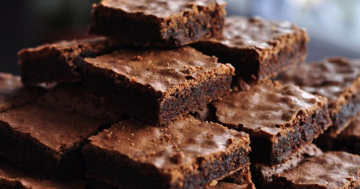

brownie
ingredientes
4 ovos
1 xic e 1/2 de açúcar
200g de chocolate meio amargo
3 col. de sopa de manteiga ou margarina
1/2 xíc. de chocolate em pó
1 pitadinha de sal
1 xíc. de farinha
1 col. de chá de essência de baunilha
vídeo
modo de preparo
Adicione os ovos e o açúcar em um bowl e misturar com um fuê até ficar homogêneo e clarinho. Após isso derreter a manteiga e com o chocolate no microondas de 30 em 30 segundos. Misturar os ovos e o açúcar com a manteiga e o chocolate e acrescentar a baunilha. Mexer bem. A seguir peneirar o chocolate em pó e misturar bem com movimentos suaves de baixo para cima, logo após peneirar e acrescentar a farinha de trigo na massa, por último acrescente uma pitada de sal para realçar o sabor. Untar a forma com manteiga e chocolate em pó, despeje a massa na forma e ajeite a massa com forma de silicone. Forno pré aquecido à 180°C por 30 minutos ou até espetar o palito e ele sair um pouco molhado.